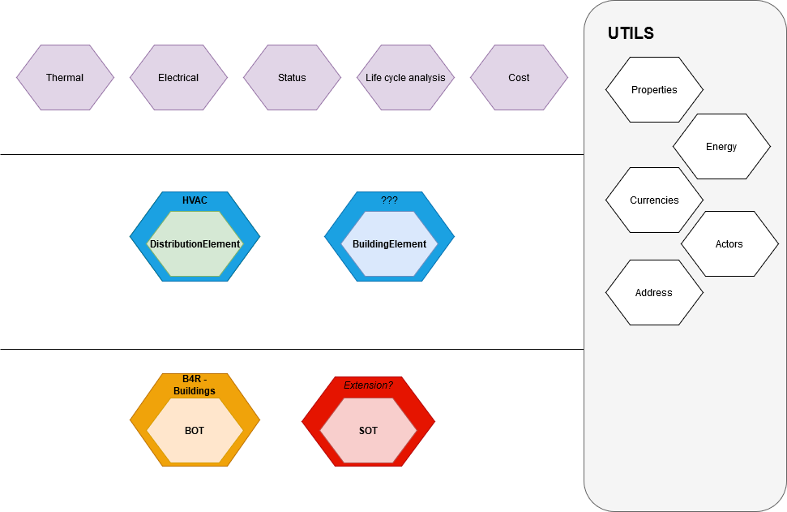

The BIM4Ren ontology is a set of ontologies that can be used to model energy efficient renovations. It is built as fully modular ontology and based on
many current standards or existing ontologies. Close to the IFC schema architecture, it is made of different layers:
the Core layer: where relation between elements can be specified, in particular to describe the location of the different elements within the building or their role in a MEP network.
the Product layer: where different classes of products are exposed
the Domain layer: where properties from different domain (thermal, electrical, acoustic...) can be attached to products
the Utils layer: where concepts that can be used at different layers are exposed, or useful ontologies that are not specific to the AEC domain.
It belongs to the core layer, and is an extension of the BOT ontology (Building Ontology Topology). Additional concepts are the possibility to describe a building enveloppe, and to classify buildings and rooms according to their usage.

The BIM4Ren buildings ontology: Overview back to ToC
The BIM4Ren ontology is made of the following ontologies: